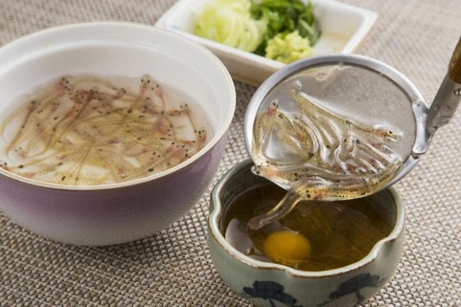

Consiste de servir peces shirous vivos y comerlos antes de que éstos mueran.
Normalmente son acompañados con huevo crudo para que estos puedan sobrevivir
y nadar más tiempo en la clara del huevo mientras se comen.
Estos son conocidos como los “peces bailarines” debido que bailan en tu boca mientras te los comes.

El shirako es una de las delicias tradicionales de Japón. Conformado de semen
de pescado mezclado con salsa de soya. Este se puede servir como tempura,
sopa o en forma de sushi.

Este es el nombre que se le da al hígado de caballo en este país. Un plato donde se sirve el hígado de este animal totalmente crudo y acompañado solamente por ajonjolí.
Su textura es viscosa y sangrienta con un sabor bastante fuerte. Este órgano también lo puedes encontrar en forma de helado.
Tipo de tofu que es preparado y fermentado en vinagre o salsa awamori por años.
Este plato fermentado se dice que es delicioso, ya que, es muy parecido al queso crema pero con un sabor más fuerte y amargo.